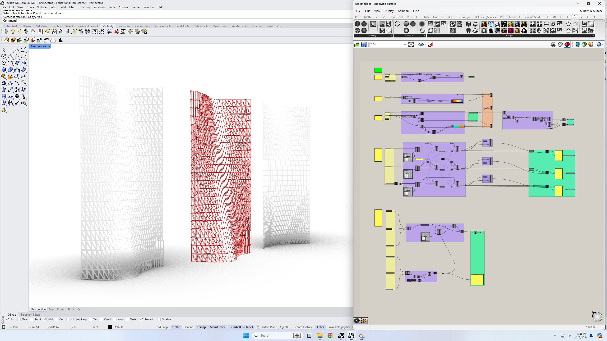
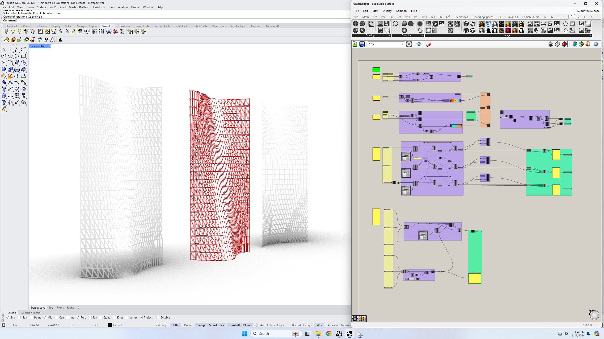

TERRACURVE TOWER
Role: Designer & BIM SpecialistLocation: New York, NY
Team: Yilin Zheng, Manas Bhatia, Yuxi Dai
Tools: Rhino, Grasshopper, Revit, ClimateStudio, Lumion, Adobe Suite
Project Overview: Terracurve Tower is a visionary mixed-use high-rise that reimagines urban living and working in the heart of Manhattan. The design responds to post-pandemic needs by integrating flexible office spaces, vibrant retail, and a boutique hotel, all within a climate-responsive envelope.

Concept & Inspiration
The project draws inspiration from the dynamic skyline of New York and the organic forms found in nature. The tower's facade is designed to maximize daylight, enhance views, and create a unique identity within the cityscape. Our concept was to create a building that not only stands out visually but also adapts to its environment, providing comfort and flexibility for its users.

.jpg)
.jpg)
Design Process
Site & Climate Analysis
We conducted detailed sun and wind studies to optimize facade shading and reduce energy consumption. Using tools like Grasshopper, we explored multiple massing options and facade patterns. Climate analysis informed the orientation and shading strategies for optimal energy performance and occupant comfort.


Facade & Form Finding
The facade was developed through iterative parametric modeling. The use of Rhino.Inside allowed us to seamlessly translate complex Grasshopper geometries into a detailed Revit model.
.jpg) 

The program stacking strategy for Terracurve Tower organizes the building's diverse functions vertically, optimizing both user experience and building efficiency. The lower levels accommodate retail, garden, and office spaces, while the upper levels are dedicated to hotel and residential uses. Mechanical (MEP) floors are strategically placed to support building systems. The elevator zoning, as shown in the table, ensures efficient vertical transportation by dividing the tower into zones served by different elevator sets.

Outcome